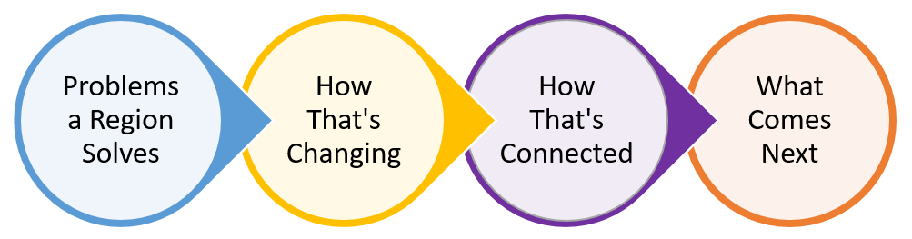
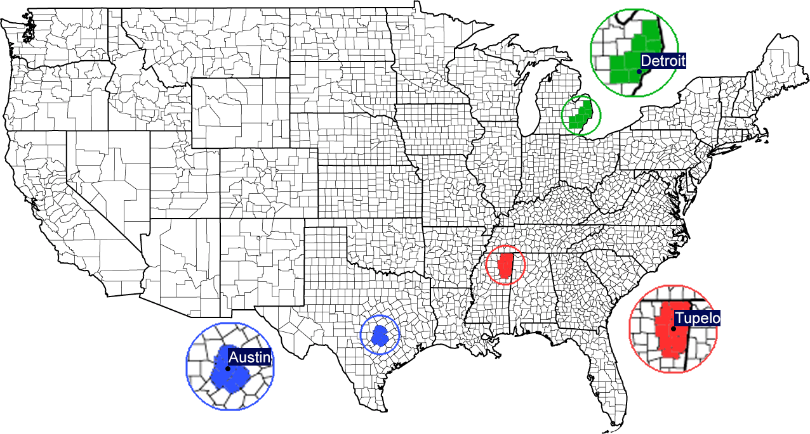

<div id="framework-page">
    <div id="framework-container">
      <div id="framework-wrapper">
        <!-- please put new content into below ... -->
  
        <div class="process-step-wrapper">
          <h1 class="process-step">How we apply network analysis to economic development</h1>
        </div>
        <br>
        <p class="process-explanation">Business is about solving other people’s problems – grow food to solve hunger, build cars to solve long distances, provide legal services to solve risk – so we use problems as our base unit. We look at employment and industrial activity to see what problems a region solves, we look at trends over time to see how that’s changing, we use network analysis to see how that’s connected, then combine all those tools to see what comes next.</p>
        <br>
        <div class="process-img-big-wrapper"></div>
        <br>
        <p class="process-explanation">To do this, we first need to define regions. To conduct national analysis, we use commuting zones, which group counties into labor areas by analyzing where people tend to work. For clients, we can group counties into custom areas. For the demonstration data, we defined Austin, Tupelo, and Detroit using the counties below.</p>
        <br>
  
        <div id="framework-map-wrapper">
          
        </div>

        <br>
        <p>Next, <a href="./?page=traded">see what problems these regions solve.</a></p>
        <!-- please put new content into above ... -->
      </div>
    </div>
  </div>
